Co oferujemy?

Zajmujemy się głównie myciem szklanych powierzchni. Cena każdego zlecenia ustalana
jest indywidualnie po uwzględnieniu kilku czynników wpływających na koszt usługi.
Oto co bierzemy pod uwagę podejmując się zlecenia, przykładowo mycia okien.
Na samym początku ustalamy jaką usługę mamy wykonać. Jest to zależne od poziomu
zabrudzenia
okien i oczekiwań względem usługi. Poniżej przygotowaliśmy podział usług na kategorie,
aby łatwiej było ustalić przedmiot usługi.
Mycie pielęgnacyjne – to usługa polegająca na myciu cyklicznym już doczyszczonych
powierzchni, które trzeba umyć z powierzchownego kurzu/brudu, który nie zdąży się
wtopić w pory powierzchni, na której się znajduje. Zazwyczaj jest to regularne mycie okien
wykonywane w częstotliwości nie mniej niż raz na 2 miesiące. Pozawala to na utrzymanie
obramowań i szyb przez długie lata w niezmienionej formie.
Mycie gruntowne – usługa polega na umyciu mocno zabrudzonych powierzchni tak, aby
sucha powierzchnia nie brudziła - bez usuwania zabrudzeń stałych takich jak kleje, farby,
rdze czy wżery z brudu.
Mycie z doczyszczaniem – usługa polegająca na umyciu okien i ram wraz z szorowaniem
mocno zabrudzonych powierzchni z użyciem mocnej chemii.

Mycie poremontowe – usługa doczyszczania okien w pomieszczeniach po
remontach/budowach.
Kiedy ustalimy już rodzaj usługi, musimy uwzględnić kilka innych czynników takich jak:
- wielkość okien
- rodzaj stolarki
- dostępność do mytych powierzchni
- wysokość mytych powierzchnia
- ilość okien
- częstotliwość mycia
- odległość od Warszawy jeśli prace mają być wykonane poza jej granicami

Zwykle po kontakcie telefonicznym już po 2-3 minutach rozmowy dowiedzą się Państwo
jaki będzie koszt zlecenia, a po kilku godzinach otrzymają Państwo pisemną ofertę
zawierającą wszystkie szczegóły.